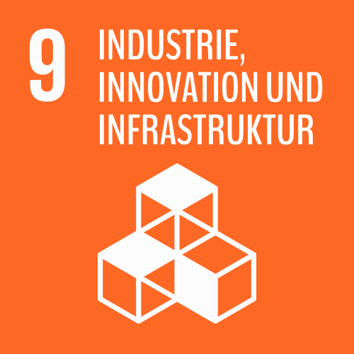

Eine nicht vorhandene oder marode Infrastruktur hemmt die Wirtschaftlichkeit und fördert so die Armut. Beim Aufbau der Infrastruktur sollte der Aspekt der Nachhaltigkeit im Vordergrund stehen, zum Beispiel durch die Förderung von umweltfreundlichen Verkehrsmitteln. Auch Fabriken und Industriestätten sollten nach ökologischen Gesichtspunkten nachhaltig produzieren, um eine unnötige Umweltbelastung zu vermeiden.
„Die reinste Form des Wahnsinns ist es, alles beim Alten zu lassen und gleichzeitig zu hoffen, dass sich etwas ändert.“
(Albert Einstein, theoretischer Physiker und Physik-Nobelpreisträger)
